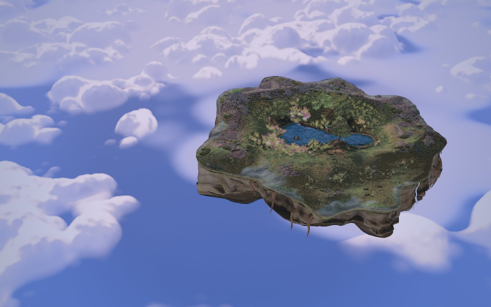

A habitat game set in 2052
Pocket Reserve
Plant a bare floating island tile by tile until frogs, kingfishers and otters come to live there.
The game is free with no sign-up, and your island saves in this browser as you go.
What you do
- PlantYou begin on bare rock with eight seeds and a hand of cards: meadow, flowers, hedge, pond and reeds. Each seed plants one card on one tile.
- InviteYour Wildlife list shows which animals have a home ready. Choose one, then the tile it will live on, starting with an earthworm and a bumblebee.
- ConnectChapter by chapter you join the island up: meadow to meadow so the wind cannot lift it, reeds to water, and trout in the pond before a kingfisher will come to fish there.
In 2052 the ground below the cloud deck is ash-grey and slow to mend, and above it the floating islands of the Lumen shelf hold what was saved until it can go home. You keep Cell 7, the outermost island, which is bare rock where nothing has yet taken root. Twenty species are waiting for a home on it, from earthworms to otters, and all of them come from the meadows, fens and woods of Europe’s wet north-west.
Every seed is a choice about which animal gets a home.
Each chapter gives you a handful of seeds, enough for careful work and never enough for waste. An animal needs its whole home at once, the ground it lives on and the cover, water or flowers beside it, so a seed in the wrong place can leave an animal with nowhere to settle.
The story so far has twenty-five chapters in two acts, The First Green and Wet Country, and each one opens with a message from someone else on the Lumen shelf.
The twenty species
Each one needs what it would need in the wild.
An earthworm asks only for soft ground and a frog for water with meadow beside it, while a kingfisher wants clear water, a branch to watch from, a bank to tunnel into and fish within reach before it will stay.
Scroll sideways to meet all twenty species.
Play in this browser.
There is nothing to download. From your first tap you hear wind over the island, water where you have dug it, a few plucked notes and each animal as it settles, and the Sound button turns all of it off.
Go to the island